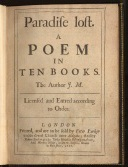

John Milton’ın epik şiiri Kayıp Cennet (1667) İncil’in “Yaratılış” bölümünde de anlatıldığı gibi insanın masumiyetini kaybedişinin uzun ve ayrıntılı bir temsilidir. İngilizce’deki en güzel epik şiir sayılan Milton’ın başyapıtı, yalnızca Batı edebiyatında bir dönüm noktası olması bakımından değil, aynı zamanda Reform’un da etkileyici eserlerinden biri olması bakımından önemlidir.

Kayıp Cennet, vurgulu hecelerin vurgusuz heceleri takip ettiği onlu hece ölçüsüyle yazılmış, uyaksız bir şiirdir. Shakespeare de oyunlarının çoğunu bu şekilde kaleme almış, ama Milton bu yapının olasılıklarını ve uygulamalarını önemli ölçüde genişletmiştir. Aynı zamanda, Homeros ve diğer klasik dönem şairlerinin epiklerinde sıkça kullandıkları uzun, karmaşık bir teşbih türü olan destansı benzetmeden de epeyce faydalanmıştır.
Kayıp Cennet, Şeytan ve diğer düşmüş meleklerin Tanrı’ya karşı gelerek Cennet’teki savaşı kaybetmeleriyle başlar. Ceza olarak Tanrı onları cehenneme gönderir. İntikam arzusuyla yanıp tutuşan Şeytan ve yandaşları, Tanrı’nın yaratırken en çok değer verdiği insanı baştan çıkarmaya karar verirler. Şeytan cehennemden sıvışarak gizlice Cennet’e girer. Kendisini karakurbağası olarak gösteren Şeytan, Âdem ve Havva uyurken Havva’nın kulağına fısıldayarak memnuniyetsizlik tohumları eker. Şeytan’ın planının farkında olan Tanrı, Rafael adlı meleği Âdem’i uyarması için gönderir. Cennet’e geri döndüğü zaman Şeytan, Havva’nın tek başına çalışmak için Âdem’den izin kopardığını görür. Bu kez bir yılan kılığına girip pohpohlama ve kurnazlıkla Havva’yı Tanrı’ya karşı gelip Bilgi Ağacı’nın meyvesini yemesi için ikna eder. Havva’nın bu davranışını öğrenen Âdem çaresizliğe kapılır. Ancak Havva’sız Cennet’te yaşamaktansa Havva’ya katılıp sürülmeyi tercih ederek bilinçli olarak meyveyi yemeye karar verir. Yanlarına gelen Başmelek Mikail’in insanlığı bekleyen kötü talihi Âdem’e göstermesinden sonra, Âdem ile Havva “el ele,” gözyaşları içinde, “dalgın adımlarla ve yavaşça,” cenneti terk ederler.
Kötü adamlar çoğunlukla edebi çalışmaların en ilginç karakterleridir, Kayıp Cennet’te de durum böyledir. Şeytan en karmaşık, gerçekçi ve etkileyici karakterdir. İleri görüşlü, liderlik ve hitabet becerileri sergileyen, ama bu niteliklerini gururu adına, bencilce amaçlar için kullanan bir anti-kahramandır. Ayrıca Şeytan kötülük yaparken bilinçsiz değildir, kendisinin farkındadır, Tanrı’nın onu sürdüğünü bildiğinden eziyet çekmektedir. Sonunda Şeytan trajik bir şahsiyet olarak karşımıza çıkar ve bu yorum, kimilerinin Milton’ı Şeytan’a çok fazla sempati duymakla suçlanmasına sebep olmuştur.
EK BİLGİLER:
1. Milton, muhtemelen glokom hastalığından kör oldu ve 1654 yılıyla beraber yazılarını asistanına yazdırması gerekti.
2. Kayıp Cennet’ten sonra Milton, Yeni Ahit’te yer alan ve İsa’nın çölde geçirdiği kırk günde Şeytan ile yüzleşmesini anlatan hikâyeyi yeniden yorumlayan Kazanılmış Cennet’i (1671) kaleme aldı.